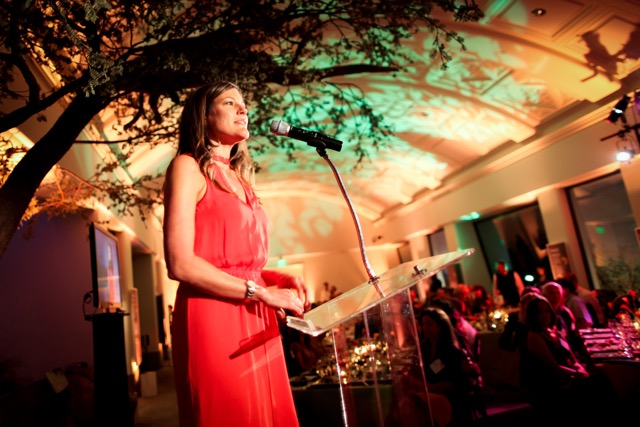
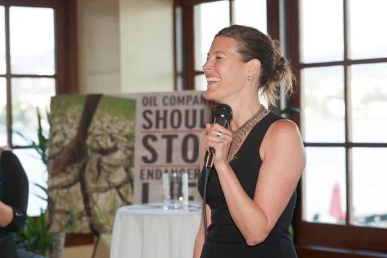
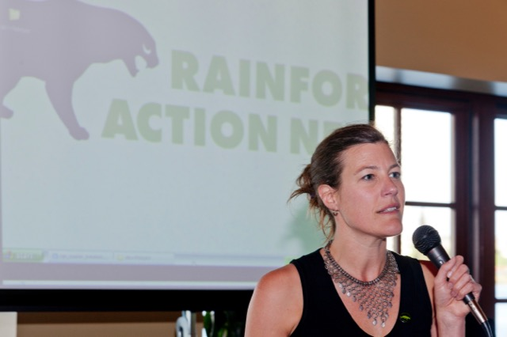

Becky began her career doing research on indigenous communities on Baffin Island, in the far northern Canadian territory of Nunavut. Subsequently, she spent eight years working under Helena Norberg-Hodge at the International Society for Ecology and Culture (ISEC), which included running programs in Ladakh, India and later working in their UK and US offices promoting local alternatives to economic globalization. She referred to her years at ISEC as the period "where the roots of my activism are". One of her proudest achievements during this period was helping build a local women farmer’s alliance from a membership of seven women to a whopping 4,000 members.
Working with those women, helping them build alternatives to the western development model that was being imposed on their communities, was a foundational experience for me. It showed me that local wisdom is a powerful tool for change and that true solutions, when grounded in deep respect for cultural traditions, ecological wisdom and creativity can both improve quality of life and build a future where people live in harmony with nature.
Becky earned a bachelor’s degree from McGill University before taking her Master’s degree at the School of Community and Regional Planning at UBC. She was an exceptional student at SCARP and distinguished herself through her principles, passion, activism, and zest for life. Becky was a natural born leader and served as President of the Planning School Association while at SCARP. She was never one to shy away from a spirited debate on the most pressing environmental and human rights topics of the day. Her academic achievements at SCARP culminated in her thesis research on the impacts of globalization on traditional food and farming systems and the growing movement of resistance and renewal against these forces.
In 2010, Becky became the first female executive director of the US based Rainforest Action Network (RAN) in its 27 year history. Under her leadership, RAN achieved tremendous victories in preserving endangered rainforests and the rights of their indigenous inhabitants. She helped to architect the most significant agreement in the history of the organization: a landmark policy by Disney Entertainment that redefined how the company purchases and uses paper in order to protect endangered rainforests. Prior to becoming Executive Director, Becky led RAN's Global Finance Campaign against some of the nation’s most powerful private financial institutions to successfully negotiate a sector-wide bank policy statement known as the Carbon Principles. The policy put limits on the financing of new coal-fired power plants, which created a pivotal moment in the battle to curtail the construction of 200 planned new coal plants in the US. In her first years at RAN, she helped lead an effort to persuade major banks, including Bank of America and Wells Fargo, to stop lending money to companies that mine coal by removing the tops of mountain in Appalachia.
Becky spent much of her time thinking about how to inspire masses of people to work for transformational social and environmental change, and how to push and reform the continent’s biggest corporate polluters. As she said during a keynote address in October 2012:
We need to remember that the work of our time is bigger than climate change. We need to be setting our sights higher and deeper. What we're really talking about, if we're honest with ourselves, is transforming everything about the way we live on this planet.
Becky was a regular panelist at international and human rights conferences and published numerous articles on her areas of expertise. She was a regular contributor to The Huffington Post and other major media outlets, and has been a fellow at the Oakland Institute, a BankTrack committee member, as well as an alumni of the Rockwood Leadership Institute and winner of the UK-based Derek Cooper Award for Investigative and Campaigning Journalism. In 2013, Becky won the Business Ethics Network (BENNY) “Individual Achievement Award”, which recognizes an individual for outstanding contribution towards making corporations more socially and environmentally responsible.
Becky passed away unexpectedly in 2012 at the age of 39. She will long be remembered by family and friends as a “force of nature” who would move mountains with her drive and intelligence; all with an infectious laugh, adventurous spirit, and a heart bursting with love.